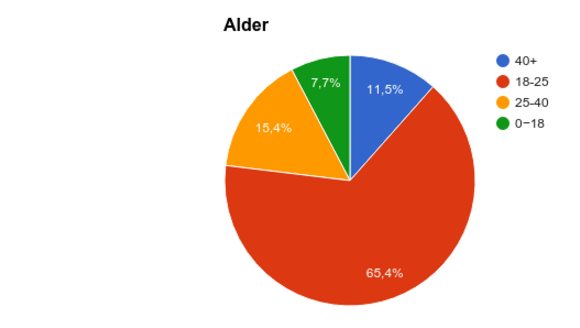
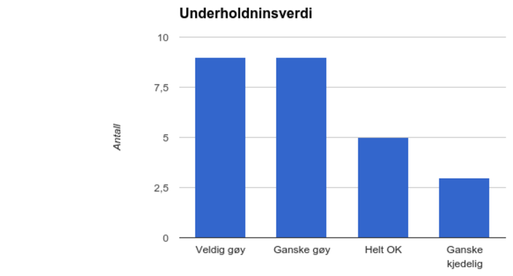
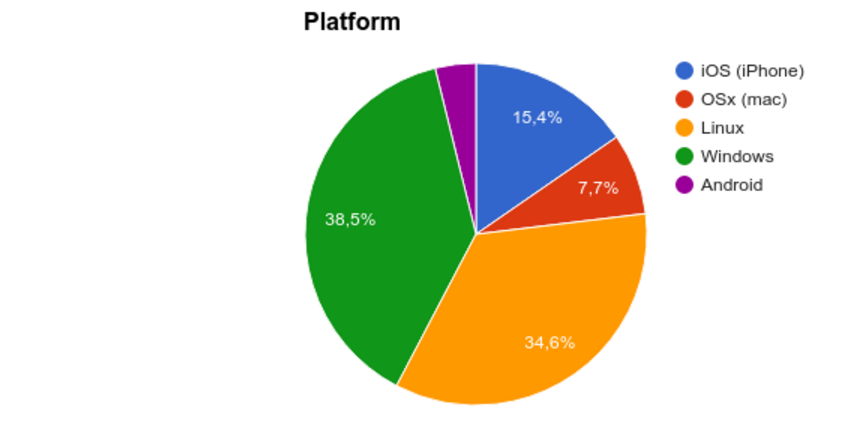
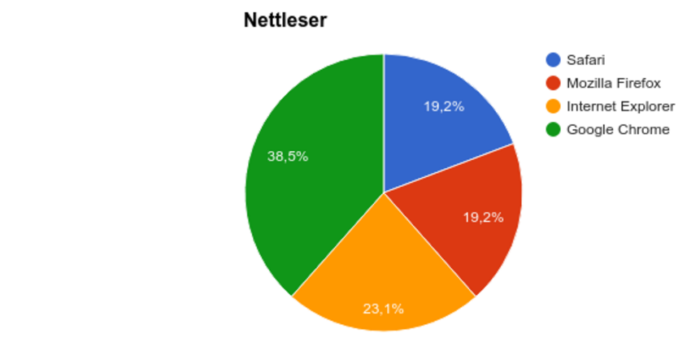
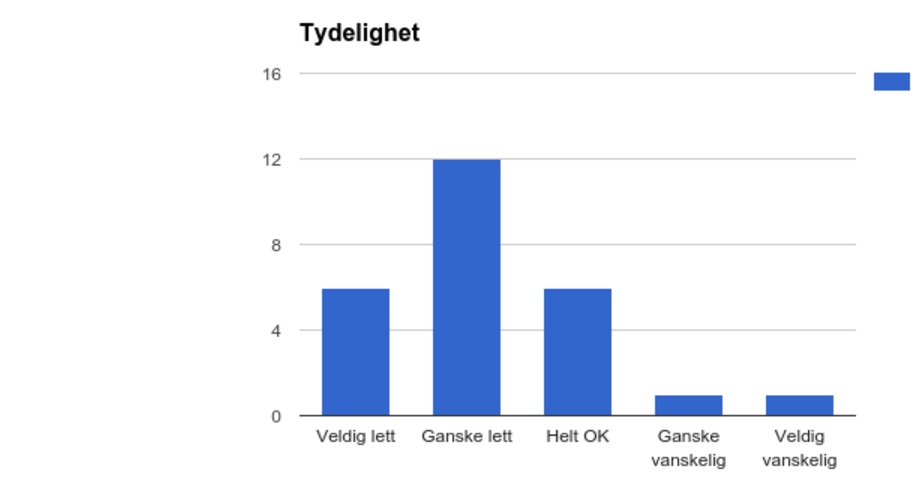
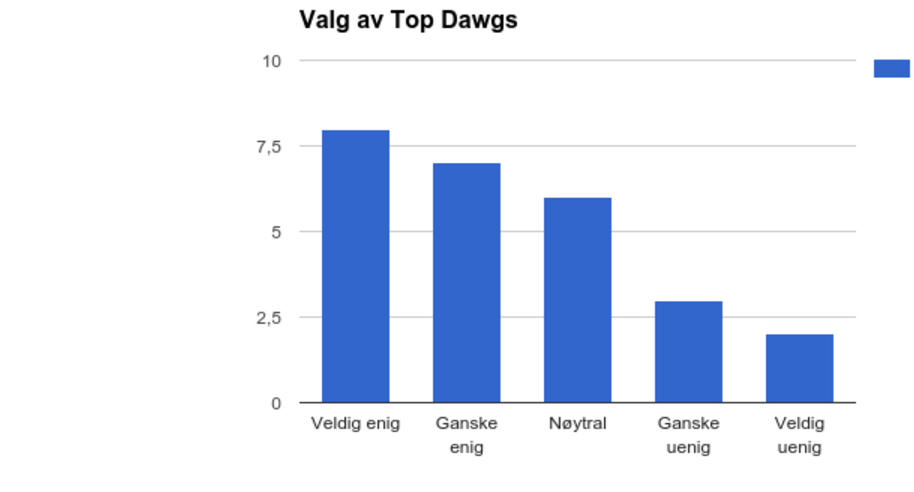
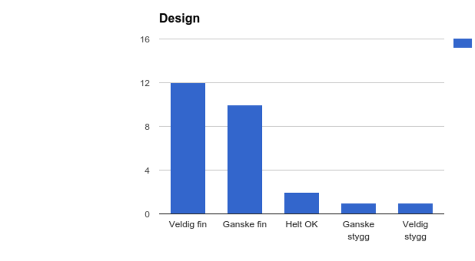
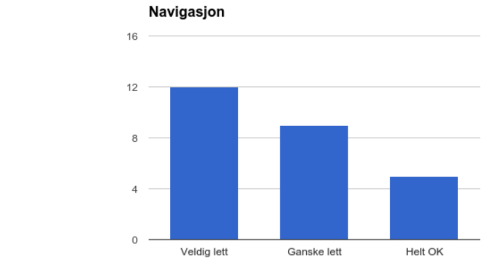
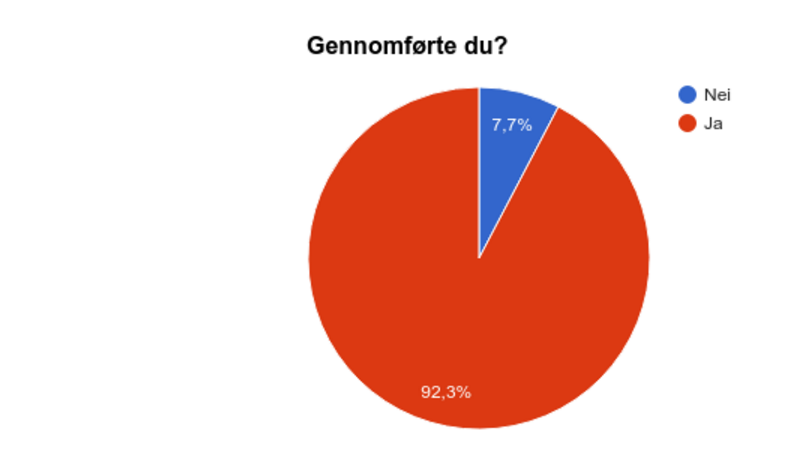

1. Dokument
P4 Prosjekt Testing: Top Dawgs
Håvard Kittelsen, Jakop Notland
IT2809 November 14, 2015
3. Administrative Detaljer
Kunde: Stian Sandø
Webside Navn: Top Dawgs
Kontakt Person: Stian Sandø
Linkt til websiden, klikk her
3. Test Dokument
I spørreskjemaet vårt har vi tatt for oss tre forskjellige typer spørsmål. De tre første spørsmålene tar for seg hvilke aldersgruppe, kjønn og hvor stor interesse de har for å se på videoer av folk som mestrer forskjellige aktiviteter. Disse første spørsmålene tok vi med for å finne ut om testerene av nettsiden passet temaet til nettsiden og hvilke aldersgrupper og kjønn som passet best.
De to nest spørsmålene spør om hvilken platform testeren brukte når han testet siden. Vi spurte om hvilket operativsystem de brukte; Windows, Linux, OSx(mac), Android eller iOS(iPhone), og hvilken nettleser de brukte; Internet Explorer, Google Chrome, Mozilla Firefox, Opera, Safari eller Lynx. Dette er viktig å ha med for å finne ut på hvilke platformer eventuelle tekniske feil forekommer.
De to fem spørsmålene handlet om brukeropplevelsen til tersterene. Her spør vi om nettsiden var tydelig, om de er enig i hvem vi har valgt som "Top Dawgs", om de syntest designet på nettsiden var fint, om det var lett å navigere seg gjennom nettsiden og om de syntest de fikk gjennomført det de ville med nettsiden. Dette har vi med i testen for å finne ut hvordan testerene opplevde nettsiden vår og om den har noen brukerverdi. Her kan også tekniske feil utslå.
4. Brukergruppe
Vi valgte å spørre folk vi visste var enten interessert i å se på sport eller andre filmer av mennesker som utfører aktiviteter på høyt ferdighetsnivå. Vi ville ha testere i alle aldersgrupper, men flest i aldersgruppen 25-40, for vi følte at det var den aldersgruppen som passet best til nettsiden vår.
Av alle de som prøvde nettsiden vår, fant godt over gjennomsnittet underholdningsverdi i å se på videoer av mennesker som mestrer forskjellige aktiviteter. Dersom man anntar at vi fant testere som er interessert i å se på sport eller andre filmer av mennesker som utfører aktiviteter på høyt ferdighetsnivå, så viser dette at vi har truffet ganske bra på brukergruppen vår.
5. Testplatformer
De mest populære platformene for brukerne våre er Windows og Linux, med 38,5% og 34,6%. De andre platformene er IOS (15%), mac (7,7%) og Android (3,8). Med tanke på at de fleste brukerne våre ser ut til å brue windows og linux, så kommer vi nok til å kjøre de fleste testene våre på disse operativsystemene.
Brukerene våre viser seg å være ganske jevnt fordelt utover de forskjellige nettleserene med følgene data: Google Chrome (38,5%), Internet Explorer (23,1%), Safari (19,2%), Mozilla Firefox (19,2%). På grunn av den jevne fordelingen har vi tenkt til å teste så og si like mye på alle de forskjellige nettleserene.
6. Oppsummering Tilbakemelding
Vi spurte brukerne våre hvor lett det er å se hva nettsiden vår handler om. Dette spurte vi om fordi vi hadde lyst til å vite om innholdet i siden var forvirrende for noen, eller om det var tydelig og enkelt å forstå hva siden går ut på. Vi var ganske fornøyd med resultatet her, ettersom ingen av de som svarte på spørsmålet syntes det var vanskelig å skjønne hva siden går ut på.
Ettersom brukerne var så fornøyd med tydeligheten på siden, så har vi ikke noe forslag til forbedringer på dette punktet.
Vi ønsket å finne ut om brukerene våre syntes at vi har et bra utvalg av “Top Dawgs” på nettsiden vår. Vi tenkte at hvis brukeren ikke liker valgene våre av hovedinnhold i nettsiden, så vil de heller ikke se på det. Derfor reagerte vi positivt på at de fleste syntes at nettsiden har et bra utvalg av “Top Dawgs”.
De som ikke var så fornøyd med valgene av “Top Dawgs”, var for det meste misfornøyd med at et av valgene var video fra et dataspill. Dette skal vi melde videre til eieren av siden, slik at han eventuelt kan endre innholdet i siden.
Da vi laget denne spørreundersøkelsen var vi spent på om folk kom til å godta designet vi har valgt. Her ble vi også veldig positivt overrasket, ettersom det bare var en brøkdel av de som tok testen som syntes at siden var ganske stygg eller veldig stygg.
Ettersom vi fikk veldig bra tilbakemelding på designet, så kommer vi nok ikke til å endre noe. Likevel kan vi se for oss litt mulige endringen i dette designet kunne vært bra. Det er fordi nettsiden kanskje kan se litt firkantete og gammel ut.
Vi spurte brukerene våre hvor lett de syntes det var å navigere seg på nettsiden vår. Dette spørsmålet fikk vi veldig god respons på, og ingen av brukerne valgte alternativene “ganske vanskelig” eller “veldig vanskelig”. Vi føler at løsningen vår med en oversiktlig meny har gjort det veldig lett får brukeren å finne fram på siden vår.
Klarte brukeren å fullføre oppgaven? Dette spurte vi om, fordi vi syntes det er viktig å vite om brukerene våre klarte å bruke nettsiden vår skikkelig. Det var bare noen få brukere som ikke klarte å gjennomføre det de holdt på med. De som ikke fikk fullført sa at de hadde prøvd å finne alle bonusknappene våre, men at de ikke fant de. Denne synes vi ikke er så farlig, ettersom knappene skulle være litt gjemt, men vi håper selvfølgelig at alle finner de til slutt. Hvis det er noen tvil: Den ene knappen er bonusknappen i headeren, den andre er når man trykker på fjeset til Stian på logoen.
7. Mulige Endringer
Gjennom denne spørreundersøkelsen har vi kommet opp med et par forslag til hvordan vi kan gjøre nettsiden vår bedre. Vi har også tenkt litt i gruppen og fått noen ideer om hvordan vi kunne endret nettsiden vår.
Vi har tenkt til å melde fra til lederen i “Top Dawgs”, Stian Sandø og si at noen av brukerene mislikte at det var med videoer av dataspill. De mente nemlig at de ikke kan bli “Top-Dawg” uten å være i fysisk aktivitet. Hvis Sandø ønsker å bytte ut noe innhold på grunn av disse tilbakemeldingene, så kommer vi nok til å hjelpe han med å oppdatere nettsiden.
De fleste brukerne våre syntes at designet vårt så greit ut. Likevel tenker vi at det kan finnes forbedringer i designet. Noe vi har tenkt er at designet vårt kanskje er litt kjedelig, eller litt gammeldags. Dette kunne vi ha nok fikset med et litt mer kreativt design.
Noen av brukerne våre syntes at det var litt kjedelig at de ikke fant alle ekstraknappene våre. Vi tenkte egentlig at det skulle være litt utfordrene å finne ekstraknappene, så vi kommer nok ikke til å endre noe. Men noe vi kunne gjort, er å legge inn linker på nettsiden. For eksempel et sted i teksten på “hjem” siden, slik at alle brukerne finner knappene.
Vi håper å kunne opprettholde et tett samarbeid med “Top Dawgs” og Stian Sandø i fremtiden. Vi har syntes det har vært spennende å samarbeide med Stian, ettersom han ga oss et veldig spennende og morsomt prosjekt. Hvis Stian trenger hjelp med å forandre “Top Dawgs” vil vi gjerne bidra. Vi vil også gjerne jobbe med han i fremtiden dersom han har noen nye prosjekter.
8. Refleksjon
Dette prosjektet har gitt oss veldig mye kunnskap innen grunnleggende HTML, Javascript og CSS. Når man er tvungen til å lage en nettside med grunnleggende funksjoner i HTML, Javascript og CSS får man en bedre forståelse av hvordan strukturen til en nettside fungerer.
Det er ikkje bare en nettside vi begge er stolte av som er kommet ut av dette prosjektet, vi har også bygget opp et veldig godt vennskap. Det å jobbe i et team er definitivt givende, både intellektuelt og sosialt.
Vi har virkelig fått opplevd hvordan summen av individene er mer enn to i et team, alene går jeg fort, men sammen går vi langt.
Vi har begge fått en åpenbaring over hvordan grunnsteinene til det mest spektakulere mennesket har funnet opp hit til, nemlig internett, fungerer.
Alt i alt har det vert en veldig lærerik og givende erfaring å ha dette faget, det er et viktig fag hvor man lærer teknologi som blir mer og mer populært i dagens globalisering.